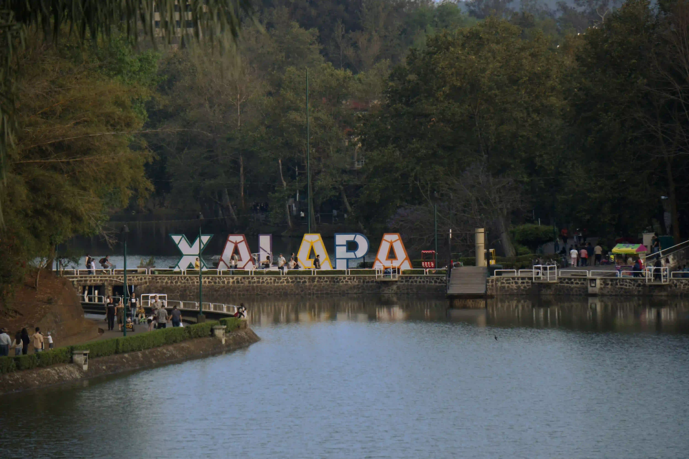

YOUR LOCAL TRAVEL GUIDE
Discover Xalapa
Explore hidden gems, enjoy local flavors, and discover unforgettable experiences in Xalapa and its surrounding towns.
Explore DestinationsFIND YOUR NEXT ADVENTURE
What Would You Like to Explore?
From peaceful gardens to charming nearby towns, find an experience that matches your interests.
PLACES WORTH DISCOVERING
Explore the Region
Start your journey with some of the experiences waiting for you around Xalapa.